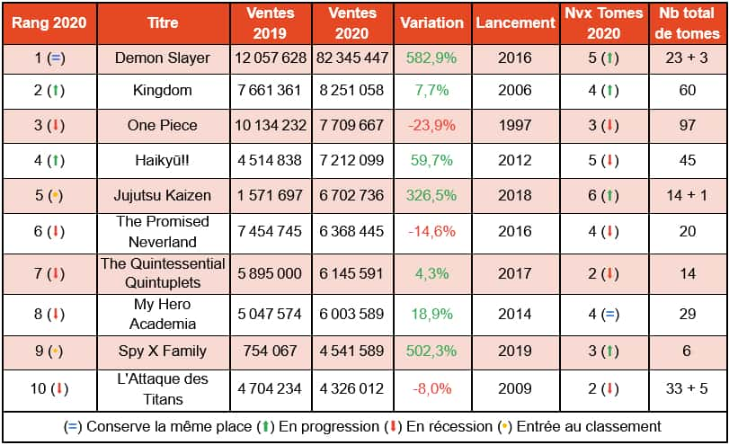

Mais qu'est-ce que les mangas. Les mangas sont des bandes dessinées japonaises. Les premiers mangas apparaissent au Japon dès le XIII ème siècle dans un ouvrage mettant en scène des animaux en mouvement, le Chouju-giga (鳥獣戯画). Le premier manga tel que l'on connaît actuellement date de 1902. Le mot manga est un mot composé de 2 kanjis : « Man » qui signifie « divertissant », « exagéré », et « Ga » qui se traduit par « dessin » ou « image ». Le manga présente des codes graphiques particuliers comme l’utilisation du noir et blanc et de cases. Le sens de lecture est inversé par rapport aux livres occidentaux.
Il existe plusieurs types de manga, destinés à plusieurs publics :
Le kodomo manga est une bande dessinée pour enfants à l’instar de Pokemon et Doraemon. Le shonen manga s’adresse à des adolescents et raconte les aventures d’un héros orphelin et de ses combats tels que Naruto ou Dragon Ball. Le shojo manga est destiné aux jeunes filles et aborde principalement les histoires d’amour et d’amitié des écolières comme Nana. Le seinen manga est réservé aux étudiants ou jeunes adultes et traite des sujets plus réalistes de thèmes variés comme Death Note ou L’Attaque des Titans. Le josei manga est la version féminine du seinen. On peut mentionner Citrus. Le hentai est interdit au moins de 18 ans, je vous laisse deviner pourquoi... 🔞.
En France, le manga se fait d’abord connaître à travers les dessins animés, à partir de la fin des années 70. Plus tard, Dragon Ball et d’autres mangas destinés aux adolescents font leur apparition dans les programmes pour enfants. Le caractère violent totalement inadapté à la cible est souvent critiqué. C’est pourquoi l’image du manga n’a pas toujours été positive en France. Il faut attendre la publication d’Akira de Katsuhiro Otomo et les films d’animation du célèbre Hayao Myazaki pour séduire à nouveau le public français dans les années 90. Après avoir triomphé au Japon, les mangas connaissent un nouvel essor en Europe. Ces BD japonaises rencontrent un énorme succès en France qui en devient le plus grand consommateur du monde après le Japon. 😍 Par ailleurs, Dragon Ball de Toriyama et One Piece de Eiichiro Oda dépassèrent largement Les Aventures de Tintin d’Hergé.
Voici les bilans de vente de mangas sur l'anné 2020 au Japon :
